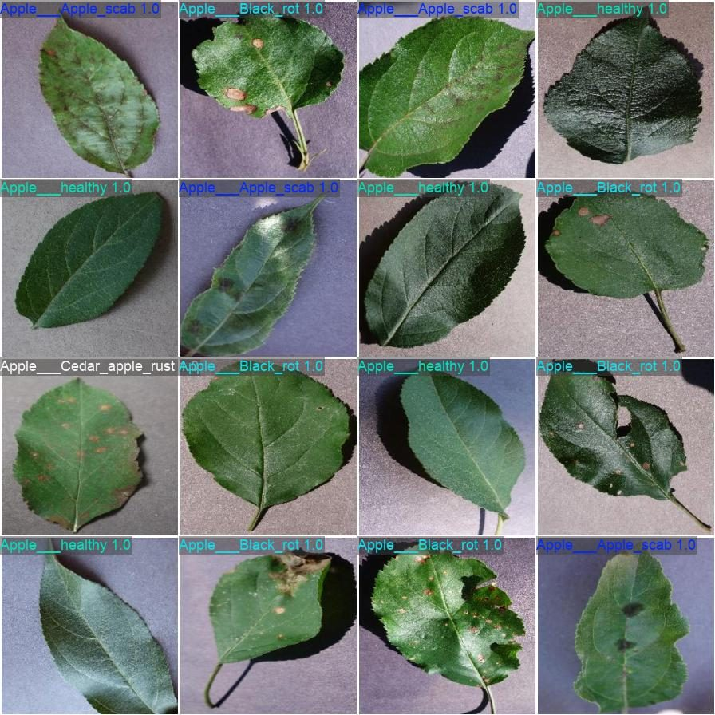
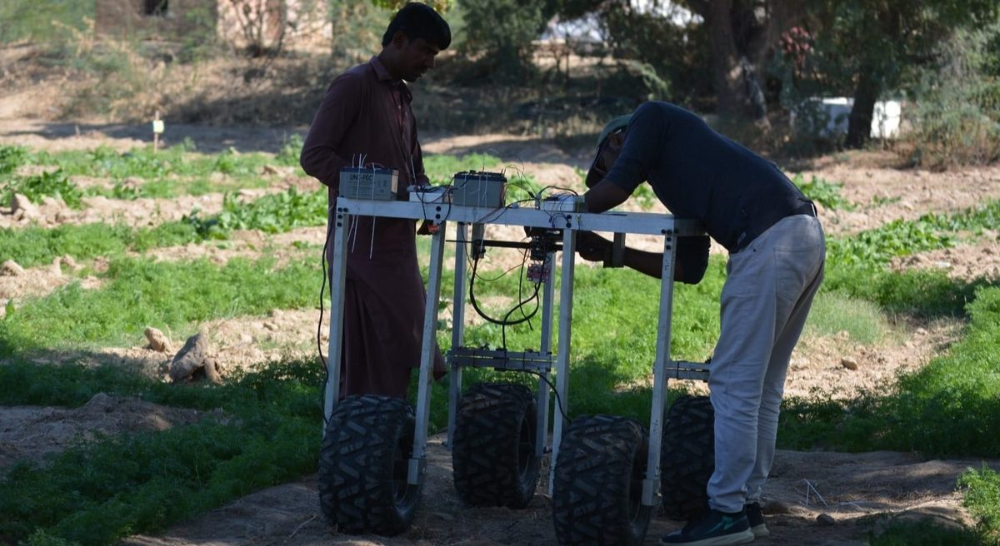
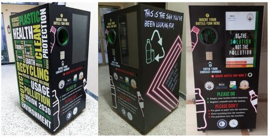
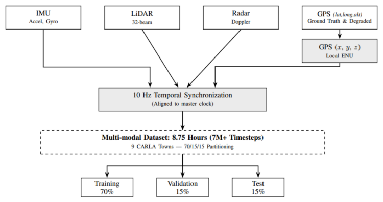

Product & Technology Strategy
Decide what to build — and what not to. Roadmaps, feasibility studies, architecture reviews and technology selection grounded in engineering reality, so the strategy survives contact with hardware, data and deadlines.
Technology development & product strategy
Baazm helps teams decide what to build, then engineers it end to end — AI, robotics, embedded systems and the platforms around them. Strategy and engineering in one team, so nothing gets lost in translation.
What we do
Most products fail in the gaps — between the roadmap and the hardware, between the model and the field. We cover both sides of that gap.
Decide what to build — and what not to. Roadmaps, feasibility studies, architecture reviews and technology selection grounded in engineering reality, so the strategy survives contact with hardware, data and deadlines.
Perception, autonomy and intelligence that work outside the lab. Computer vision, edge AI and TinyML, ROS-based robotics and SLAM — taken from prototype through field validation.
Robust firmware and hardware — from custom boards to connected device fleets.
Dashboards, APIs and cloud backends that turn raw device data into decisions.
Fast, physical proof — 3D printing, CNC and laser cutting, electronics assembly.
How we work
Clear stages, honest checkpoints, and working hardware or software at every step — not a big reveal at the end.
Frame the problem, the constraints and the success metrics before a line of code is written.
Design the system and retire the biggest risks early with targeted prototypes.
Iterate across hardware, firmware, AI and software with continuous testing.
Validate in the field, document properly, and hand over — or stay on to scale.
A short, focused engagement: roadmap, feasibility study or architecture review with clear recommendations.
A scoped project taken from prototype to deployment, with milestones and working demos along the way.
Ongoing capacity for teams that need embedded, AI or platform expertise without a full-time hire.
Selected work
A sample from our founder's portfolio of case studies — research-grade work taken through real hardware and real data.

Robotics · Computer vision
A drone fleet that detects and counts fruit in real orchard imagery, reaching 0.961 mAP50 without a central controller.
Read the case study
Agri-robotics · Published
A gantry-based weeding platform with a retrained YOLOv5 vision stack — published in the MDPI journal Machines.
Read the case study
Embedded · IoT · Published
A conveyor-sorting recycling machine with remote bin-status reporting over LoRa — peer-reviewed and published in MDPI Recycling.
Read the case study
Autonomy · Research
Graduate research into resilient positioning and navigation for embedded autonomous systems operating without GNSS.
Read the case studyFounder
Baazm is founded by Azmat Hussain — an AI & robotics engineer with published research, a fabrication background from Fab Academy, and a track record of taking hardware, firmware and software from first idea to real deployment.
Start a project
Tell us what you're trying to build, fix or figure out. We read every message and will reply with honest next steps — even if the answer is "you don't need us."
hussainazmat.rnd@gmail.com